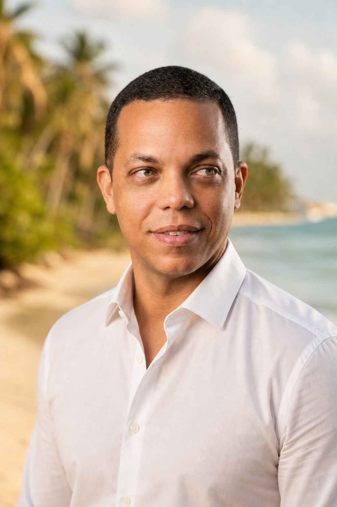

Fotografia de viagem
Roteiros, paisagens e cenas marcantes de Alagoas registrados com atenção à atmosfera e ao ritmo de cada lugar.

Sobre o fotógrafo
Sou Erick Ramon, fotógrafo maceioense. Há mais de 30 anos, registro paisagens, encontros e detalhes que fazem o estado ser tão especial.
Meu processo começa com a observação da luz e do ambiente, criando imagens naturais — do patrimônio histórico às praias, sempre com respeito ao ritmo de cada pessoa e lugar.
Atendo moradores, famílias e viajantes que desejam levar uma lembrança autêntica, produzida com cuidado do primeiro clique à entrega final.
Serviços
Do registro espontâneo à imagem pronta para ocupar uma parede, cada etapa é pensada para valorizar o que você quer guardar.
Roteiros, paisagens e cenas marcantes de Alagoas registrados com atenção à atmosfera e ao ritmo de cada lugar.
Ensaios de pessoas e famílias com direção leve, luz natural e espaço para a espontaneidade aparecer.
Pós-produção cuidadosa e impressão de alta qualidade para transformar um registro em presença duradoura.